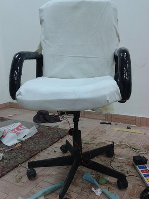

Blog
-
04 2015
Solar Food Dryer Shivam Chawla, Kuldeep Kushwaha, Ravi Saukta, Rakesh Chaudhary, Vicky Garg
Himachal Pradesh is very famous for its Apricots and Apples. Dried Apricots and Apples make a great product for the market and are in great demand as healthy snacks by health conscious people and others as well for their great taste.Apricot dehydration is a very costly process as it consumes a lot of energy for drying.So as per their needs we designed and fabricated a solar food dryer for them which can meet the requirements of both industries and cottage workers. It is a small endeavor to help them. Read More
-
04 2015
Automatic Plant Watering and Irrigation System
Gian Singh, Ayush Kumar, Himanshu Rajput, Nishant Dogra With agriculture contributing 13.7% to the national GDP and about 49% of INDIA’s population working in the agriculture sector, INDIA cannot afford to take agricultural production lightly. Still Indian farmers are dependent on natural rains for irrigating their lands, which are fairly erratic and hence does not help the INDIA’s cause. The existing irrigation systems, utilizing electrical motors and tube wells are not efficient. They cause a lot of water and electricity wastage and excess of water may damage the crop. The world is already facing the water crisis and electricity production in INDIA is not enough to meet the ever increasing demands. Agriculture sector alone consumes around 28.2% of total electricity produced in India. Hence, there is an urgent need to improve our irrigation system. Read More
With agriculture contributing 13.7% to the national GDP and about 49% of INDIA’s population working in the agriculture sector, INDIA cannot afford to take agricultural production lightly. Still Indian farmers are dependent on natural rains for irrigating their lands, which are fairly erratic and hence does not help the INDIA’s cause. The existing irrigation systems, utilizing electrical motors and tube wells are not efficient. They cause a lot of water and electricity wastage and excess of water may damage the crop. The world is already facing the water crisis and electricity production in INDIA is not enough to meet the ever increasing demands. Agriculture sector alone consumes around 28.2% of total electricity produced in India. Hence, there is an urgent need to improve our irrigation system. Read More
-
04 2014
Wireless switch board Kumar Vishal Rai
 The walls of the building constructed with various switches for the light and fan are an obstruction to use the clear wall surface of the room. Almirahs are sometimes an obstruction to operate the switches conveniently / are to be placed as per the switch boards in the wall. This generates the need of some remote systems through which one can control the appliances and the switch board can be placed just as the 1ft above the wall instead of 4.5ft. Read More
The walls of the building constructed with various switches for the light and fan are an obstruction to use the clear wall surface of the room. Almirahs are sometimes an obstruction to operate the switches conveniently / are to be placed as per the switch boards in the wall. This generates the need of some remote systems through which one can control the appliances and the switch board can be placed just as the 1ft above the wall instead of 4.5ft. Read More
-
04 2015
Energy Efficient Smart Rooms
Devender Singh Bhakuni, Prriyasha Parmar, Priyanka Mourya, Vivek Maturu, Pavan DattaIt is common knowledge that a majority of people forget to turn off the lighting and other electrical and electronic devices after vacating a room.This malpractice leads to the wastage of a lot of electricity and as a result, money.This project has been prototyped as a functional energy saving electronic device which will automatically cut off power to the room if the occupancy in the room is zero.Read More
-
04 2015
Auto Cooling Chair
Raman Kant, Rachit Upadhyay Throughout the 21st century , almost 6 billion people have worked for almost 8 hours either in private sector or in any other sector and they had to sit on the chair for most of the time.Sitting on a chair for a long time either in working hours or in meetings makes the employees or clients uncomfortable and irritated due to sweating in their thighs, back and bottom part.Basicallly every part of the body that is in direct contact with chair.Read More
-
04 2015
Automatic System to Reduce Power Consumption
Parijat Kumar, Yatin Sharma, Roop Singh, Navjot SinghPeople usually forget to switch off electrical appliances like lights, fans etc in their homes. Some time they feel lazy to do so if switches are far away. So a lot of energy is wasted in this course. We want to develop an automated electronic circuitry to switch off those electrical appliances by sensing the count of individuals in a room. There are some electrical appliances which are necessary to get switched on when someone enters the room like fan and tube light. And in hostels, tube light and fans are the only two appliances present in every room.Read More